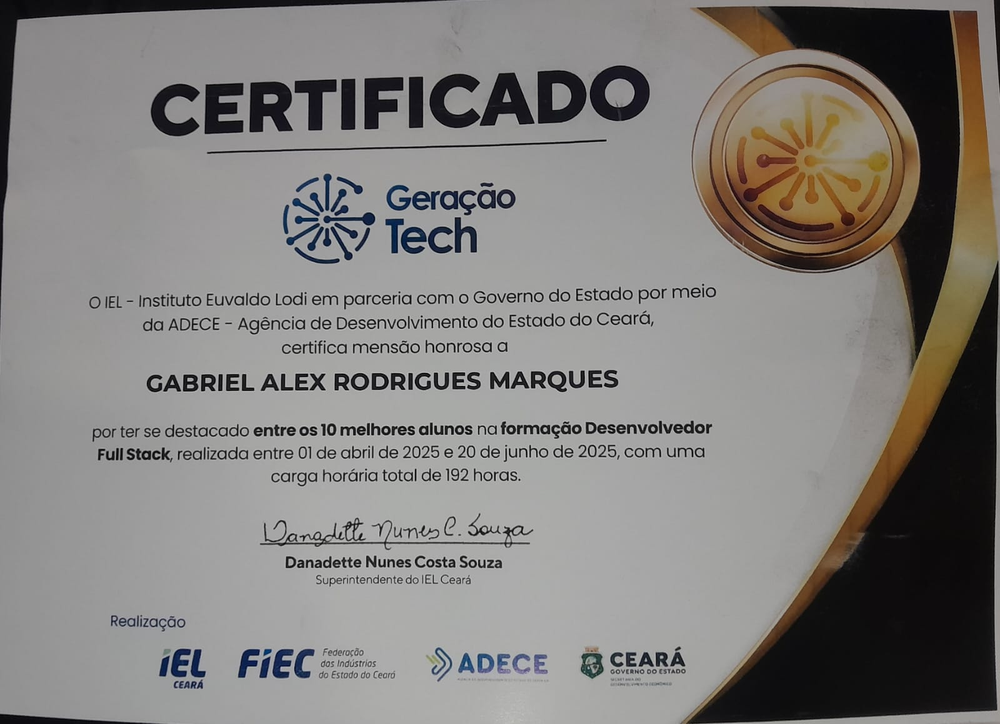
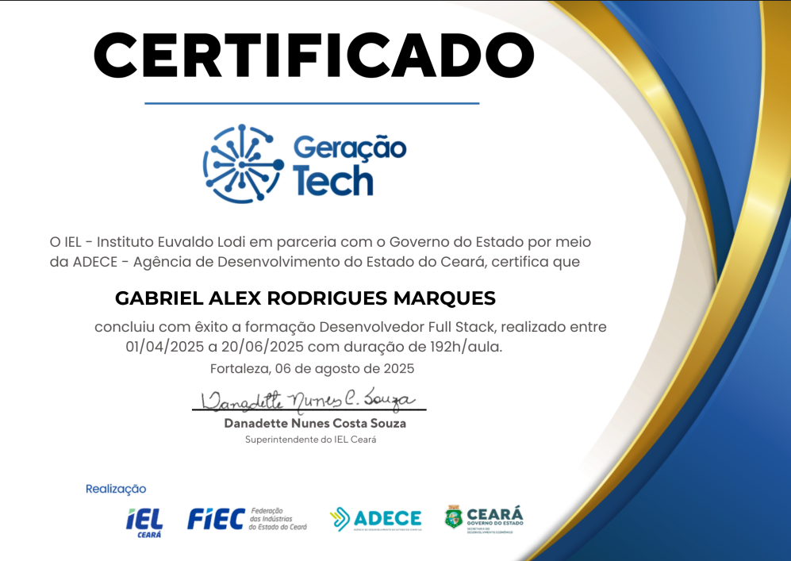
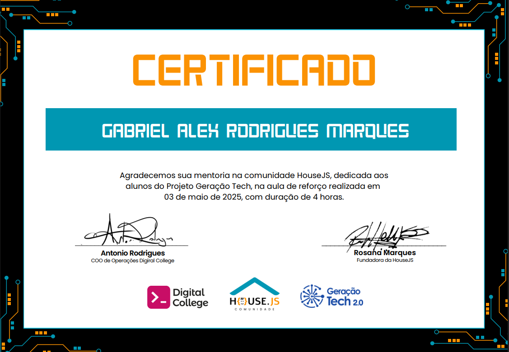
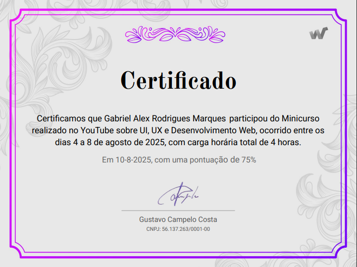

Desenvolvedor Full Stack
Geração Tech · Destaque acadêmico

Geração Tech · Destaque acadêmico

Geração Tech · Formação profissional

Udemy · Formação complementar

Digital College · Comunidade

Interface e experiência digital
No projeto final do Geração Tech, conquistei o 1º lugar entre cerca de 1.700 participantes. A conquista reforçou uma forma de trabalhar que sigo até hoje: aprender rápido, testar ideias e transformar conhecimento em resultado concreto.